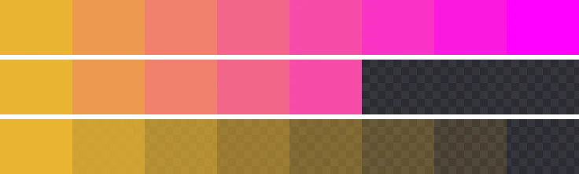
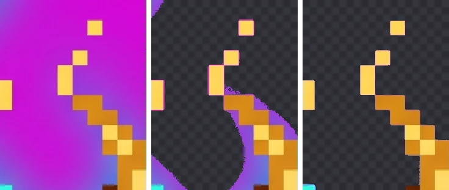

Why Color Fringes Appear Around Cutouts and How to Remove Them
If a pink outline is left around your character after removing a magenta background, it's not because the removal didn't go far enough. It's because edge pixels are a mix of the object color and the background color. This guide explains, with diagrams and measurements, why that mixing happens, why deleting colors can't fix it, and how to remove it properly.
What a fringe is
A fringe is the band of background color left around an object after its background is removed. It's also called a halo, color spill or matte line. It often goes unnoticed on white, then shows up the moment the image lands on a dark or colored background: a game scene, a dark-mode web page, a dark chat theme.
Why it happens: edge pixels are part object, part background
Pixels are square cells, and an object's boundary cuts across them at angles. A cell on the boundary is partly object and partly background, so it's painted with a color in between. As a formula:
visible color = α × object color + (1 − α) × background color
Here α (alpha) is the share of the cell covered by the object: 1 in the middle of the object, 0 in the background, somewhere in between on the edge. AI images add more on top. Generation softens boundaries over several pixels (typically 3 to 4px in a 2048px image), effects like light or shadow get painted onto the background around the character, and saving as JPG spreads color information further.

The middle row is a fringe being born. Keep the cells that differ enough from the background and delete the similar ones, and the cells you keep aren't gold; they're orange and pink mixtures of gold and magenta. Wrapped around an object, those cells form a pink outline.
Why changing the threshold doesn't solve it
An editor's “color range” or “magic wand” decides delete-or-keep with a single threshold. Widen it and the outline shrinks but the object gets eaten; narrow it and the object survives but the outline stays. We checked on a real image. Deleting only pixels within 60 per channel of the background color in the Nano Banana spirit image left 143,194 pixels opaque that are transparent in BGPeel's result. That's 6.3% of the object's area, and the median hue of those pixels was 262°, a purple. Widening the threshold to 100 cut the leftover to 1.5%, but this time 12,188 object pixels were deleted.
| Simple color deletion threshold | Spirit: background left | Spirit: object deleted | Plant: background left | Slime: background left |
|---|---|---|---|---|
| Within 40 per channel | 9.5% | 0px | 1.8% | 1.1% |
| Within 60 per channel | 6.3% | 690px | 1.3% | 0.8% |
| Within 100 per channel | 1.5% | 12,188px | 0.8% | 0.4% |
Background left is relative to the object's area, compared against BGPeel's default result. The spirit, full of light effects, had the worst fringe; the clearly outlined slime had the least. The key point: no threshold gives you “no outline” and “no object loss” at the same time.

The fix: subtract, don't delete
The solution is to solve the formula backwards. The background color can be measured from the image border, so it's known. If you can estimate how much background is mixed into each pixel (1 − α), the object color can be recovered:
object color = (visible color − (1 − α) × background color) ÷ α
Then set the pixel's opacity to α, and on any background the original object color shows through by exactly α. The bottom row of the strip above was processed this way: the pink is gone and the gold fades out. Here's what BGPeel does, step by step:
- Measure the mix: for vivid backgrounds, the background share is measured by how far the background's strong channels (red and blue for magenta) rise above its weak channel (green).
- Set opacity: pixels that are almost all background (“Remove threshold”, 0.12 or less) become fully transparent, pixels at least half object color (“Keep threshold”, 0.5 or more) stay opaque, and those in between become semi-transparent.
- Subtract the background: within 4px of the transparent area (“Edge cleanup width”), pixels have the background subtracted with the formula above, restoring their original color.
- Clear connected glows: starting from the border, pale light, purple and blue glows and AI watermarks connected to the background are treated as background. Similar colors inside the object aren't connected, so they're left alone.
- Fix yellows and oranges: yellow, orange and sand colors tend to come out of step 1 as less mixed than they are, so they're recalculated using nearby clean object colors.
Checking and fixing a fringe
- Make it visible first: switch BGPeel's preview background to black and white, open the zoom view, and press and hold to flip between the original and the result.
- A thin line of background color: raise “Edge cleanup width”. It helps most on large images with wide, soft boundaries.
- Hard, jagged edges: raise “Keep threshold” slightly to soften them.
- A wide purple or blue glow left behind: check that “Also remove colored glows” is on, and widen “Glow color range” if the glow's color falls outside it.
- Pink specks on yellow or orange areas: turn on “Fix half-tinted pixels” and raise “Search distance for the fix” if some remain.
Preventing fringes at the source
- Use PNG originals, not JPG. JPG stores color information in blocks shared with neighboring pixels, widening color bleed at boundaries.
- Remove the background first, resize afterwards. Shrinking with the background still there mixes more background into edge pixels. BGPeel removes the background at full resolution and resizes when you download.
- Keep light effects off the background. Adding “no glow, no rim light, no outer glow” to the prompt reduces glow spilling onto the background.
- Prefer outlined art styles. A dark outline cuts the mixing zone between background and object short.